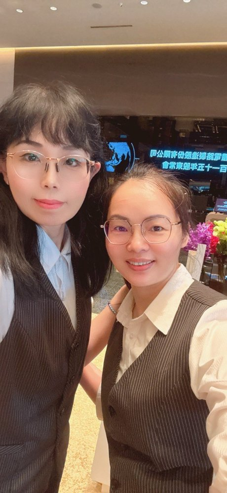
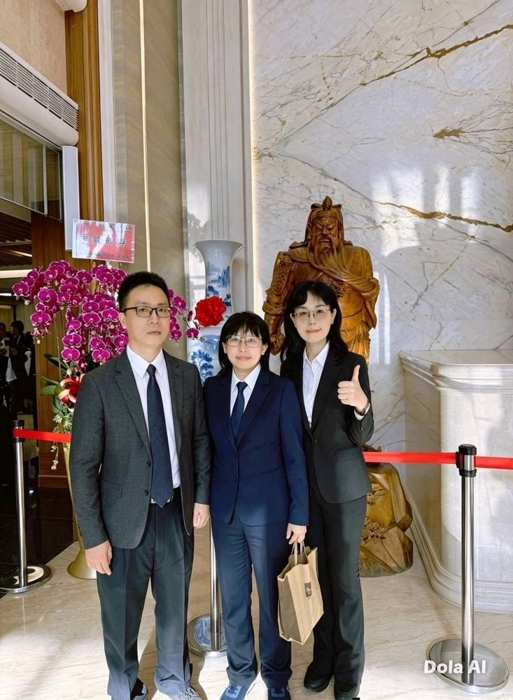
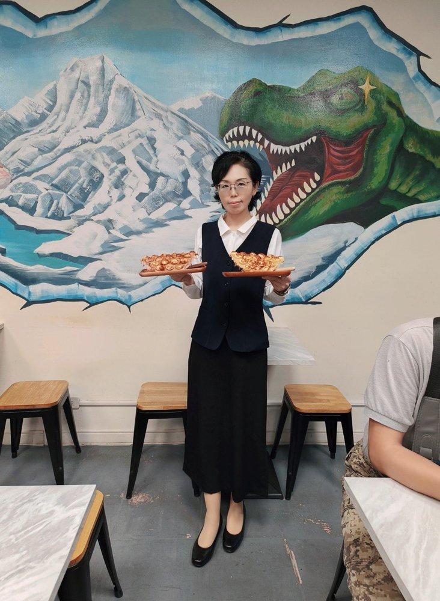

五十年，我們都在這裡
—— 毓德 曹芳瑜
感謝天恩師德慈悲，讓後學有緣求得至尊至貴的大道，踏上修辦的旅程。這份殊勝因緣，若非天恩師德暗中撥轉，實難遭遇。
民國一○九年（西元二○二○年）五月二十日，後學由引保師蔡桂芳、張謹柔慈悲引進，在好同事彭春惠的帶領下，踏入毓德佛堂求道。回首來時路，若非春惠師姐耐心成全、屢次邀約，後學恐怕至今仍與大道擦肩而過。這份因緣之可貴，後學感謝天恩師德。
求道當日，佛堂中莊嚴肅穆的氛圍，以及每一位前賢發自內心的親切關懷，讓後學深受感動。前賢們真誠的笑容與溫暖的問候，彷彿回到家中一般，令後學當下便體會到道場的祥和與殊勝。
求道之後，後學深感修道對人生的轉變既深且遠。外在氣質漸趨沉穩，不再如以往般急躁浮動；內心更能增長智慧，面對生活中的順逆，皆能以平靜的心態去體會與學習。每當來到佛堂，沐浴在佛光普照之中，心中便充滿法喜，日日踏實、時時感恩。
在道場學習期間，後學深刻體認「道真理真天命真」的殊勝。參加班務運作、聆聽前賢慈悲講述道理，每一次的學習都讓後學獲益良多。後學也把握行功了愿的機會，在十組運作中參與服務，從付出中體會到助人的快樂與修辦的意義。道場如同一盞明燈，指引著後學前行的方向。
修道非口號，要落實在日常之中。後學體悟到，修道不是遠離生活，而是在生活中實踐佛堂所學的道理——對家人多一份包容、對同事多一份體諒、對萬物多一份感恩。當心境轉變，煩惱自然淡去，取而代之的是法喜與踏實。
值此正德五十週年之際，後學衷心祝賀正德佛堂傳承永續、道務宏展。期望能接引更多原胎佛子踏入修辦的行列，齊心協力，讓正德佛堂人才濟濟，道氣興盛，共創下一個五十年。
感謝天恩師德，以報天恩師德於萬一。今後後學當更加努力，珍惜這份得來不易的殊勝因緣，把握行功了愿的機會，在修辦的道路上繼續向前。感恩再感恩。
（依曹芳瑜道親錄音整理，民國115年6月）